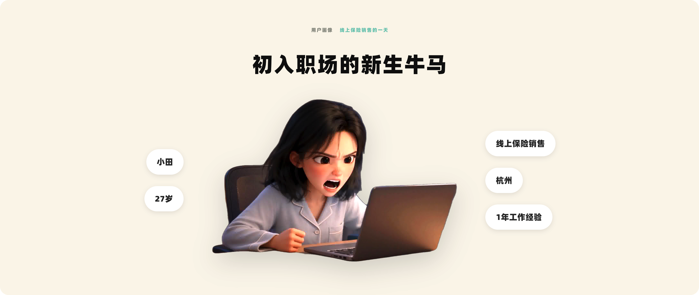
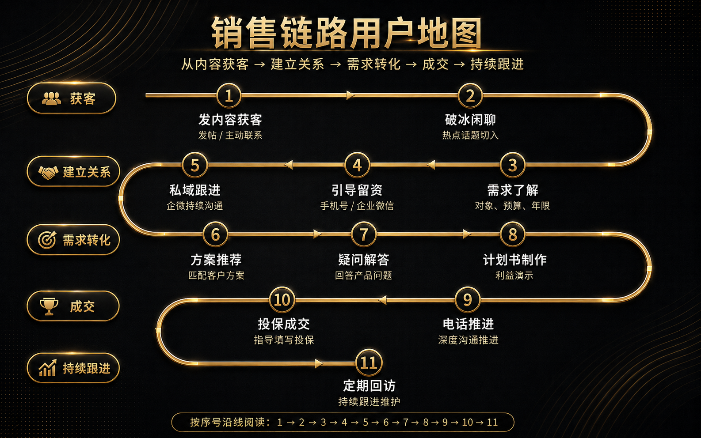

内容生产耗时
每天想选题、写文案、做图片；一条小红书通常要花 30–60 分钟。
0—1用户研究档案 / 线上保险销售
项目概述访谈现场
01用户画像

02销售流程

03用户的一天
04核心问题
时间不够、客户难找、信任难建、信息难记，以及对平台规则和 AI 的不确定，是访谈中反复出现的关键词。
每天想选题、写文案、做图片；一条小红书通常要花 30–60 分钟。
多个账号、多部手机频繁切换，爆帖时很容易来不及回复。
看得到访问和互动，却很难判断谁真正有兴趣。
客户见不到销售，不能一上来就讲保险。
客户过一段时间回来，还要重新翻聊天记录。
条款会变化，平台规则复杂，主要靠个人经验判断。
05需求定义
补充判断伪需求
这些表达听起来像功能诉求，但需要转译为更符合销售工作方式的支持。
06方案 Demo
这里会持续收录基于访谈洞察构建的方案原型。
05AI 边界
销售并不想把全部工作交给机器。理想的 AI 助理应该负责准备工作，在关键节点把主动权交还给销售。
文案初稿、热点整理、客户摘要、意向建议、常见问题回答、视频剪辑。
建立信任、复杂需求判断、最终产品推荐、收益解释、合规审核和成交推进。
07访谈整理